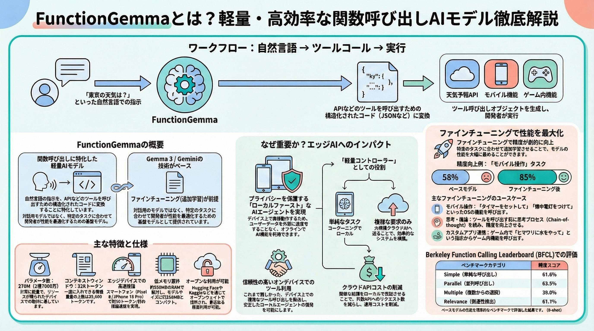

FunctionGemma
AIは「応答」から「実行」のフェーズへ
Googleが公開したFunctionGemmaは、API呼び出し（ツール利用）に特化した2.7億パラメータの超小型モデルです。スマートフォン上での完全オフライン動作と、人間の読解速度を超える圧倒的な応答性能を両立します。
業界横断の標準化イニシアチブ
🚀 戦略的な3つの核心価値
- 1 完全なプライバシー: データがデバイスの外に出ず、オフラインで動作可能。
- 2 ゼロレイテンシ: 最初の応答まで0.3秒。クラウド通信不要で物理的遅延を克服。
- 3 ミドルウェア税の撤廃: 単純タスクでのクラウドAI依存を排除し、運用コストを劇的に削減。
驚異のパフォーマンス
- 出力速度：毎秒125.9 トークン
- RAM使用量：わずか 550 MB
- ファイルサイズ：288 MB
特化型の設計思想
- 関数呼び出し（ツール利用）に特化
- ファインチューニング前提の設計
- 堅牢なエスケープ機構（
トークン）